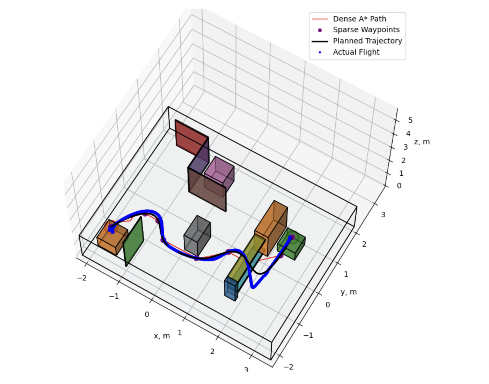
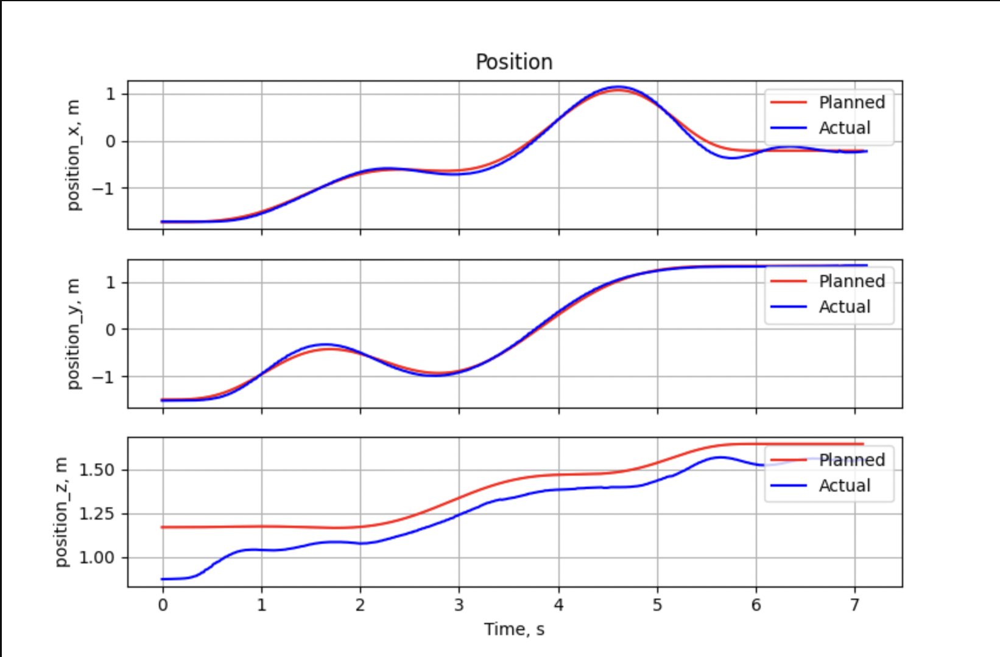

Quadrotor Autonomy
The goal of this project is to make Crazyflie 2.1 fly autonomously from a given start location to a goal location and hover at goal. To achieve this, we need to develop a path planner based on a pre-defined occupancy map, a controller for tracking the Path , and an odometry system to estimate current poses. The pose estimation will be based on sensor data from IMU and a Stereo Camera.
Path Planner and Controller
Geometric Tracking Control is used for the controller. The controller is divided into a PD based position controller and an altitude controller to correct the errors on rotation. Details about Geometric Tracking Control can be refered to this paper Link to Paper. Propotional and Derivative Gains are tuned based on Step Responses.
A* Path Planner is developed based on a pre-defined occupancy map that describes the world. However, the planned path contains only the dense waypoints. To improve the performances, we need to reduce the number of waypoints and compute a smooth polynomial curve between waypoints. Douglas-Peucker Algorithm is used to reduce waypoints in the path. The algorithm approximates the path with much less waypoints. To ensure the algorithm does not remove too many points, I set a distance limit so that there must be a waypoint at every certain distance.
Min-Jerk Optimization: based on the waypoints, we need to compute smooth curves between them to generate a optimized trajectory. To do this, we can use the 3rd order Euler Lagrange Equation with piecewise continuity constraints to compute a min-Jerk spline. By solving the ODE with constraints, we obtain the desired states for each time interval. And we can input the desired states into the controller to execute desired commands.
Visual Inertial Odometry System for Pose Estimation
Odometry system based on a single sensor will be unreliable because of uncertainties. Instead, we can combine the sensor data from
IMU and Stereo to get a better estimate of the current pose using Kalman Filter. We can use IMU data as input to the non-linear
dynamical system of the Quadrotor and get a nominal updated state. From stereo images, we can use the feature correspondence
of current image and previous image to compute rotation and translation using epipolar geometry.
Kalman Filter helps us to use
the measurement from the stereo image and update the nominal state to improve our estimation. However, the rotation in our case
cannot be represented as a vector in R3, instead, we can represent the errors of rotation in R3. So in my system, I am using the
Error State Kalman Filter (ESKF) to estimate the error states and use them to update the nominal states. Details of ESKF can be
refered to this paper and
this repo.
Results from Flight Tests
Below are the results from the flight tests in Lab. Given start location, goal location, and an occupancy map of the environment, the objective is to plan and track a collision-free path from start to goal location. The ground truth states are recorded by the VICON system and plotted as the flight path in the graphs below.
 Below is the link to a video recording the Quadrotor flight in the Lab.